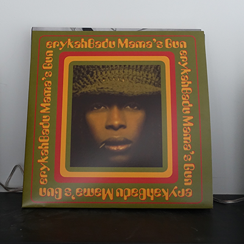
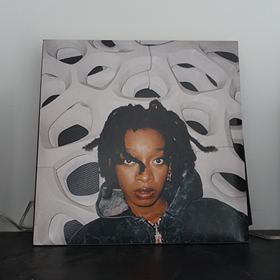
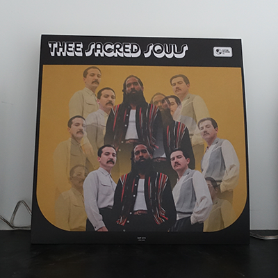
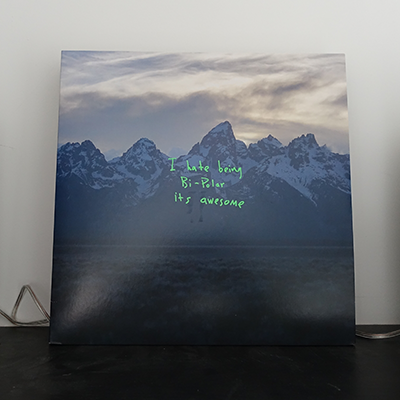

Mama’s gun van Erykah Badu valt onder de genre R&B. Ik heb deze plaat gekregen van mijn vriend op onze one year anniversary en ik kende het nog niet zo goed. Het is een van zijn favoriete albums en betekent veel voor hem. Sinds ik het ben gaan luisteren ben ik verliefd geworden op het album. Het is waarschijnlijk de eerste plaat die ik zou uitkiezen als ik eentje op zet. Dit album werd gereleased op 21 November 2000 door Motown Records. De teksten van de nummers behandelen zowel onzekerheid, persoonlijke relaties als sociale kwesties. Het album bevat Erykahs eerst top 10 billboard-hit genaamd “Bag Lady”. Dit nummer werd genomineerd voor de Grammy Award voor best female R&B vocal performance en voor Best R&B song.

No Thank You van Little Simz valt onder de genre Rap. Little Simz is een van de weinige rap artiesten naar wie ik actief luister. Vooral het nummer No Merci stond een hele lange tijd op repeat. Ik vind vooral deze albumhoes een van de mooiste die ik heb. De plaat was wel redelijk duur, namelijk 40 euro, maar los daarvan kocht ik hem gelijk. Het werd gereleased op 12 december 2022 door het onafhankelijke label genaamd Forever Living Originals. Little Simz rapt over haar eigen ervaringen in de muziekindustrie en spirituele openbaringen. Ze werkte samen met Cleo Sol (voor achtergrondzang) om dit project te maken. Bij het releasen van het album kwam een korte film van tien minuten lang om het album te ondersteunen.

Het album genaamd Thee Sacred Souls, gemaakt door Thee Sacred Souls, valt onder de genre Soul/Retro-soul. Deze plaat heb ik gekocht nadat ik met mijn vriend naar het eerste concert in Amsterdam was geweest. Mijn vriend was degene die mij hun had aanbevolen en sinds dien ben ik dol op alle soul muziek. Het was echt een nieuwe wereld die voor me open ging. Het album kwam uit op 26 augustus 2022.

Ye van Kanye West valt onder de genre hiphop. Deze plaat heb ik gekocht op de markt op waterlooplein voor maar 10 euro. Dit was net na alle commotie rondom Kanye West begon dus veel van Kanye’s producten werden stopgezet. Ze waren veel minder gewild omdat mensen Kanye niet meer konden respecteren. Ik wil niet zeggen dat ik aan Kanye’s kant sta maar ik vind zijn muziek leuk dus luister ik er naar. Dit album is het achtste album van Kanye en werd gereleased op 1 juni 2018 door GOOD music. Het album heeft gastvocals zoals, Nicki Minaj, Ty Dolla Sign, PartyNextDoor, Kid Cudi, Jeremih, Charlie wilson, 070 Shake en Valee.